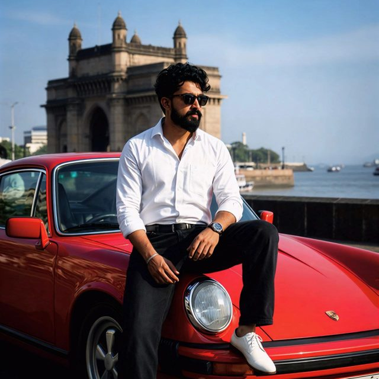

Systems that stay up under millions of requests.
I’m Om, a software engineer in Hyderabad building distributed backends, ML infrastructure and GenAI products with Java, C++, Python and GCP.
1.2M+requests per minute
99.99%availability
500+DSA problems solved

Hyderabad, India
What I work with
Languages
Production code across the stack.
JavaPythonC++GoTypeScriptSQL / PL/SQL
GenAI & agents
RAG, agents and tool calling.
LangGraphLangChainCrewAILlamaIndexMCPPineconeMilvus
Cloud & infrastructure
Deploying and observing at scale.
GKEPub/SubBigQueryVertex AISpannerDockerRedis
Backend & web
Fast APIs and clear dashboards.
Spring BootFastAPINode.jsReactOracleMongoDB
Projects
NexusFlow
Distributed multi-node LLM inference and federated RAG engine.
- C++ Layer-7 router with consistent hashing streams 1M+ token metrics a minute.
- Cut LLM inference latency by 35% with query coalescing and Redis caching.
- Federated RAG improved answer accuracy by 45%; runs on GKE at 99.9% availability.
C++PythonRAGGKE
FinCore Engine
High-frequency distributed ledger with real-time analytics.
- Spring Boot services handle 500K+ concurrent requests a minute.
- Oracle PL/SQL tuning cut query times by 40%.
- React dashboard shows live ledger data; JWT security keeps data 99.99% consistent.
JavaSpring BootReactOracle
Experience
Software Engineer, Independent
Sep 2022 to present- Built low-latency decentralized backends in Java, C++ and Python serving 1.2M+ requests a minute.
- Raised model accuracy by 45% and ad click-through rate by 15% with ML and reinforcement learning.
- Designed federated RAG pipelines that improved retrieval accuracy by 42%.
- Cut inference latency by 35% and debugging overhead by 50% with Redis caching and MLOps on GCP.
- Wrote thread-safe C++ memory pools and routing that kept the platform at 99.99% availability.
Education: BSc in Computer Science, Dr. Babasaheb Ambedkar Marathwada University, Aurangabad (2022).
Let’s build something
Open to distributed systems, ML infrastructure and GenAI roles.